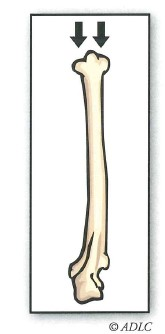
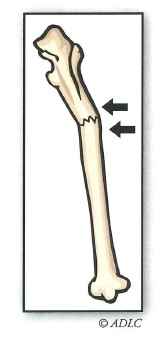
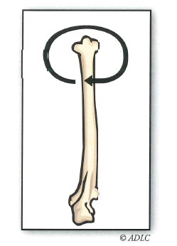
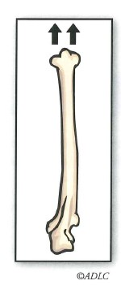

When a forensic anthropologist begins examining remains for trauma, they look for fractures in the bone (for example, simple, compound, or comminuted). A fracture is simply a break in the bone, and there are many different types of fractures. The type of bone fracture depends on the direction from which force is applied. Five directions of force cause bone fractures: compression, shearing, bending, torsion, and tension.
Directions of Force Causing Fractures
1. Compression - a force that pushes inward from the end of a bone. Fracture lines will often be numerous, wide-reaching, and tend to radiate from the point of impact. This type of force is most often applied to the skull. The shape of the displaced bone will likely match the instrument used to create the wound. Example: aircraft-related spinal injuries.

2. Bending - the most common type of force that causes traumatic injuries. This type of force impacts a bone at a right angle causing a triangular break usually through its cross section. A bending force tends to cause fracture lines at the point of impact or on the side opposite from the break. Usually complete breaks or fractures occur in adults; in children, infractions or ‘green-stick’ fractures occur.
The most common traumatic fracture caused by a bending force is a parry fracture of the ulna (the thinner of the two forearm bones). This type of fractures results when a person holds out their arms in self-defence, and the impact causes inward displacement of the bone. Parry fractures are often seen in accidents in which a car bumper has hit a person’s shins or in deaths involving a violent struggle in which the victim has tried to defend him or herself.

3. Shearing - one end of a bone is held stationary while the other end of the bone is bent. When a shearing force is applied, a linear shearing type of fracture occurs. It is usually caused by a person attempting to stop him or herself from falling. Hence, these injuries usually occur in accidents rather than homicides or suicides. Shearing forces are also created through a blow from a large instrument or object. Shearing forces can occur when a victim is dismembered using a sharp instrument (such as a saw). Shearing force injuries usually involve damage to large surface areas of bone.
4. Torsion - twisting forces occurring most often in accidents. One end of a bone is held stationary while the other end is twisted in some way. These types of forces occur often in accidents such as skiing or biking and in forensic cases such as child abuse.

5. Tension - a force that pulls on the long axis of a bone causing it to break. Tension forces most often cause dislocation of bone, but if the force is strong enough, a portion of bone may break away. This type of bone injury characteristically involves few fracture lines and occurs most often in accidents rather than violent deaths.

The national homicide rate in Canada increased by 4% in 2005 to its highest level in almost a decade. The increase was attributable to a rise in homicides in Ontario and Alberta.
Edmonton had the highest homicide rate among all major Canadian cities in 2005. Regina, Winnipeg, and Saskatoon reported the next highest rates.